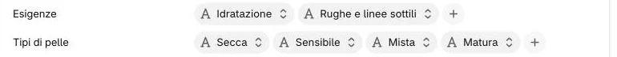
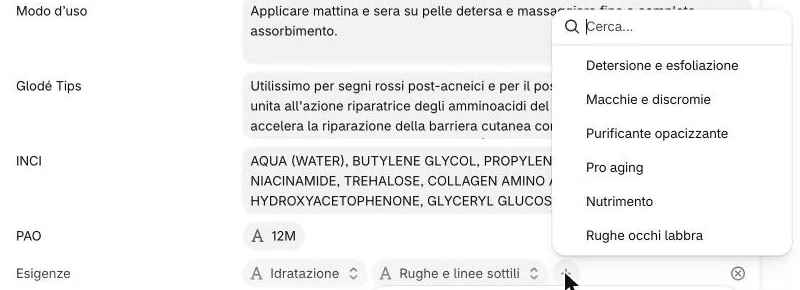
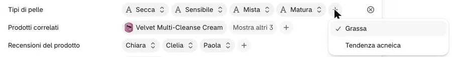
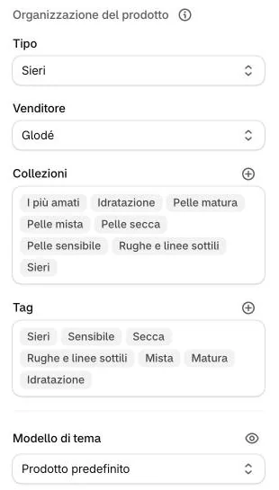

-
Aprite il prodotto e trovate i campi «Esigenze» e «Tipi di pelle»: ogni valore scelto è una pillola.

-
Per aggiungere un’esigenza cliccate il + dopo l’ultima e sceglietela dall’elenco.

Non qui 2Quali esigenze ci sono?
Otto: Detersione e esfoliazione · Macchie e discromie · Idratazione · Rughe e linee sottili · Purificante opacizzante · Pro aging · Nutrimento · Rughe occhi labbra. L’elenco del + mostra solo quelle non ancora scelte.
Un’esigenza nuova va chiesta all’agenzia: oltre al valore servono la collezione, il filtro del catalogo e la voce del menu.
E per togliere un’esigenza?
Cliccate la sua pillola: si apre l’elenco con la spunta sul valore di oggi e, in fondo, «Cancella», che toglie quel valore solo. Il ⊗ a destra della riga, invece, svuota tutto il campo: non usatelo.
-
Fate lo stesso nel campo «Tipi di pelle».

Non quiQuali tipi di pelle ci sono?
Sei: Sensibile · Secca · Mista · Matura · Grassa · Tendenza acneica.
-
Scrivete le stesse parole anche nei «Tag», poi cliccate «Salva».

4Perché anche nei tag?
Le collezioni si riempiono da sole con i campi, ma i filtri combinati del catalogo (per esempio Sieri + pelle secca) usano ancora i tag. Senza tag il prodotto sparisce quando una cliente aggiunge il filtro.

Sul sito
Il prodotto entra da solo nella collezione di ogni esigenza e di ogni tipo di pelle scelti, e quindi nel menu «Esigenze» e nei filtri del catalogo. Nella scheda i tipi di pelle compaiono come etichette sotto la descrizione.